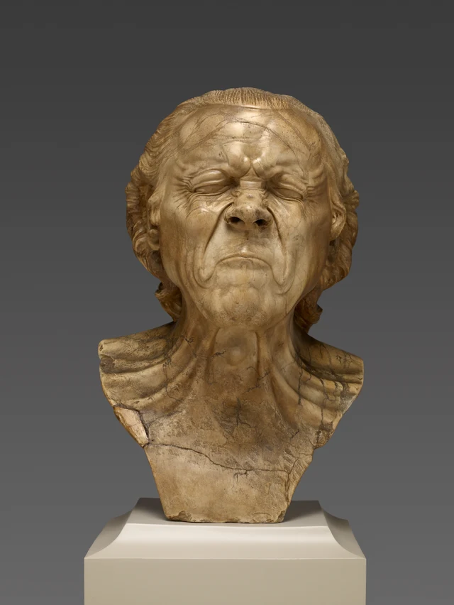
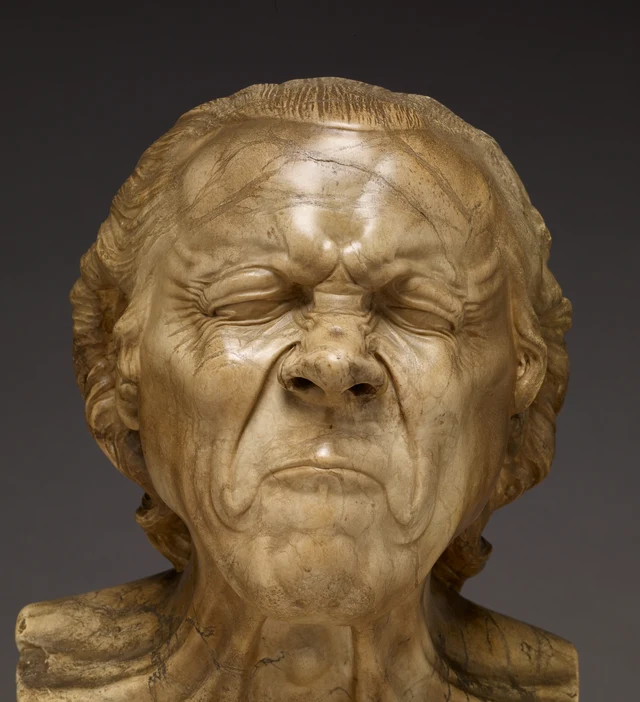
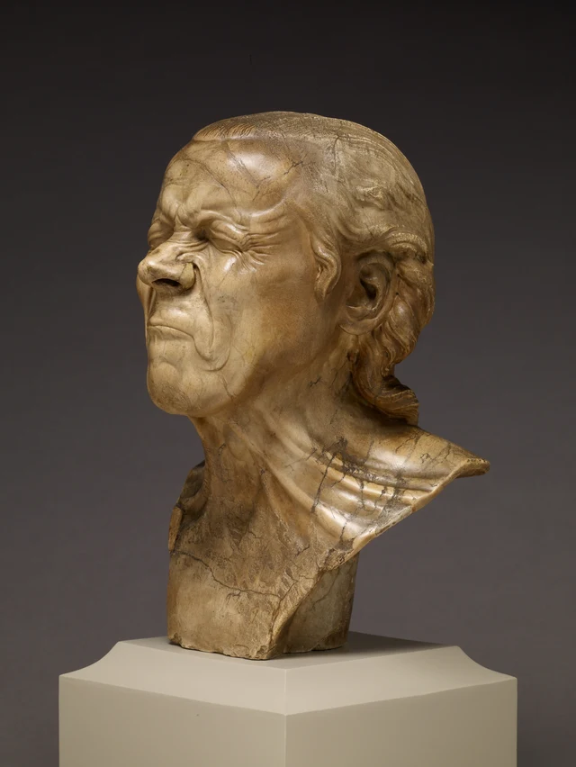
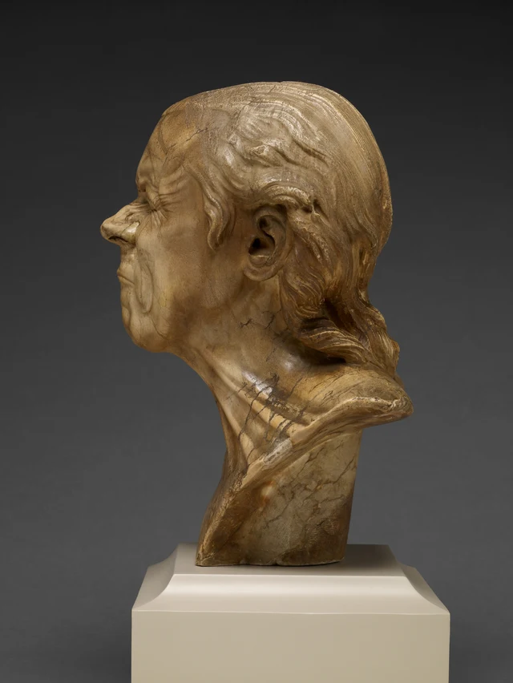

이 얼굴에서 가장 먼저 눈에 들어오는 것은 아주 긴 두 줄의 골일지 모른다.
골은 콧방울 옆에서 아래로 내려가 굳게 다문 입꼬리를 지나고, 턱 양옆에서 다시 위로 돌아 올라온다. 그 사이에 낀 입은 짧아서 거의 한 줄의 곡선만 남아 있다. 위를 보면 눈도 감겨 있다. 그러나 눈꺼풀은 평온하게 내려앉지 않고 겹겹이 눌려 있으며, 바깥 눈꼬리의 잔주름은 양옆으로 퍼진다. 눈과 입은 모두 닫혔는데 얼굴의 굴곡은 오히려 유난히 많다.

내가 보기에 이 흉상의 가장 강력한 점은 한순간 팽팽해진 표정을 오래 살펴볼 수 있는 지형으로 만들었다는 데 있다. 얼굴에 힘이 들어갔다는 것은 금세 알아차리지만, 그 첫눈으로 다 보았다고 할 수는 없다. 어디가 부풀고 어디에 깊은 골이 밀려 생겼는지, 어디가 여전히 넓은 면으로 남는지, 각각 나름의 비중이 있다. 조각은 보통 순식간에 지나가는 얼굴 찡그리기를 붙잡아 두어, 그 이름보다 그 구조를 더 오래 들여다보게 한다.
작품은 18세기 후반에 만들어졌다. 오늘날 독일 남부에 해당하는 지역에서 태어난 메서슈미트는 빈에서 수련했고 궁정과 귀족을 위한 초상 조각을 제작했다. 이 두상은 그가 말년에 만든 일련의 표정 연구에 속하며, 이 작품들은 나중에 ‘성격 두상’(Character Heads)이라는 이름으로 통칭되었다. 당시 인간의 표정과 심리 활동에 대한 연구가 이 연작의 배경을 이룬다. 다만 오늘날 쓰이는 《짜증 난 남자》는 조각가가 직접 붙인 이름이 아니라 사후에 덧붙여진 제목이다. 작가의 생애; 전시 배경; 두상과 제목의 역사
1. 굳게 닫힌 곳에 형태가 가장 많다
먼저 눈 주변에 시선을 두어 보자.
양쪽 눈썹 융기가 코뿌리 쪽으로 다가가며 미간에는 나란한 부풀음이 생긴다. 그 아래 눈꺼풀은 두껍게 겹쳐지고 눈알은 시야에서 거의 완전히 사라진다. 보통 우리는 인물의 시선을 따라가며 그가 무엇을 보는지 찾는다. 여기에는 그런 안내가 없다. 주의는 눈 주변에 붙들려, 밀려 올라온 가느다란 능선과 골을 따라 움직인다.
바깥 눈꼬리에서 특히 또렷하다. 잔주름은 같은 간격으로 동심원을 그리지 않는다. 좁은 곳에 모였다가 관자놀이와 볼 위쪽을 향해 펼쳐지며, 바깥으로 갈수록 얕아진다. 주름은 ‘조여 듦’을 눈으로 따라갈 수 있는 방향으로 만든다. 콧등에는 가로로 짧은 주름도 있어 양쪽 눈 바깥에서 방사상으로 뻗는 가는 선과 구별된다. 미간에 이르면 촘촘한 선은 다시 두툼한 두 덩어리의 융기로 바뀐다. 똑같이 힘을 주어도 부위마다 같은 모양을 취하지는 않는다.

입 주변은 훨씬 느린 흐름을 보인다. 콧방울 옆의 깊은 골은 눈꼬리처럼 빠르게 흩어지지 않고 길게 내려가 입꼬리 아래에서 둥글게 돌아간다. 좌우의 두 골은 코 아래와 입술, 턱 윗부분을 비교적 한데 모인 영역으로 둘러싼다. 윗입술은 벌어지지 않고 아랫입술도 밖으로 뒤집히지 않는다. 입의 길이는 아주 짧게 눌렸지만 그것을 에워싼 곡선은 길다. 그래서 이 작은 닫힌 부분은 자기 크기보다 큰 힘을 얻는다.
콧구멍도 보자. 눈과 입에는 좁은 이음새만 남았지만 두 콧구멍은 분명한 어두운 구멍이며 콧방울은 양옆으로 벌어진다. 얼굴의 모든 부분이 안으로 오므라드는 것은 아니다. 닫힘과 벌어짐이 아주 가까이 몰려 있고 코끝은 다시 앞으로 튀어나온다. 이처럼 방향들이 맞서기 때문에 얼굴은 단순히 주름이 많은 것이 아니라 팽팽하게 보인다.
머리 전체가 줄어든 것도 아니다. 이마 윗부분은 여전히 넓은 면이고 양 볼 바깥쪽에도 상당히 온전한 부피가 남아 있다. 빽빽한 주름이 한곳에 집중해 일어난 수축으로 느껴지려면 이렇게 비교적 펴진 부분이 받쳐 주어야 한다. 표면의 모든 곳을 똑같이 복잡하게 새겼다면 눈과 입 주변의 압축은 오히려 이만큼 두드러지지 않았을 것이다.
2. 팽팽한 얼굴에는 얼마나 긴 목이 필요한가
정면은 좌우의 깊은 골을 나란히 펼쳐 보여 주므로 이 얼굴을 평면적인 표정 도해로 보기 쉽다. 그러나 비스듬한 측면은 골 양쪽에 모두 두께가 있음을 보여 준다.

그림 3에서 가까운 쪽 볼은 넓은 밝은 면을 차지한다. 입 옆의 골은 더 이상 얼굴에 그린 선이 아니라 두 덩어리가 만나는 곳에 남은 좁은 골짜기처럼 보인다. 골 안쪽의 입 주변은 더 앞으로 나오고 바깥쪽 볼의 면은 귀를 향해 펼쳐진다. 눈꼬리의 잔주름은 더 작은 높낮이 차를 가로지르며 볼 윗가장자리에 몰린다. 이제 어느 곳이 섬세한 새김으로 모습을 드러내고, 어느 곳이 면 전체의 부풀음으로 작용하는지 구분할 수 있다.
이 각도에서는 코가 특히 도드라진다. 주름진 코뿌리에서 앞으로 뻗으며 콧구멍 아래에 그림자를 만든다. 반면 입술은 뒤로 물러나고 턱은 다시 앞으로 밀려 나온다. 따라서 얼굴의 옆 방향 공간에는 한결같이 앞으로 돌출된 가면이 아니라 잇따른 전진과 후퇴가 생긴다.
그 아래의 목이 이 전진과 후퇴를 이어받는다. 아래턱과 어깨·가슴 사이에는 긴 거리가 생기고, 몇 줄의 융기가 목 옆에서 비스듬히 내려가며 목 앞에는 거의 수직인 굴곡도 있다. 눈과 입 주변의 주름은 짧고 촘촘하지만 목의 띠들은 길고 넓으며 방향도 더 곧다. 위에서는 압축되고 아래에서는 늘어난다. 서로 다른 두 힘의 감각을 아래턱이 이어 준다.

측면은 목이 왜 필요한지 더 잘 설명한다. 턱이 앞으로 나온 뒤 목 앞부분이 곧 안으로 물러나고, 아래의 가슴에 이르면 다시 앞으로 나아간다. 이 긴 곡선은 얼굴의 짧은 전진과 후퇴를 더 큰 윤곽 안에 넣는다. 머리는 힘없이 늘어지지 않고 목도 솟은 두 어깨 사이로 사라지지 않는다. 머리는 분명히 받쳐져 얼굴의 수축이 계속 드러나게 된다.
흉상은 어깨에서 잘리고 아래쪽은 조금 더 좁은 돌 덩어리로 모인다. 여기에는 짜증을 일으킨 어떤 일을 가리킬 손짓도 없고, 표정의 원인을 덧붙여 줄 옷차림이나 장면도 없다. 몸의 대부분을 잘라 내면서 쉽게 상상할 법한 이야기 하나도 끊어 낸다. 남은 어깨와 가슴은 목의 당김에 출발점을 주기에는 충분하지만 ‘무슨 일이 일어났는지’ 설명하기에는 부족하다. 그래서 표정은 아주 구체적일 수 있어도 사건은 빈자리로 남는다.
3. 돌 위의 선이 모두 주름은 아니다
사진을 처음 보면 얼굴의 황갈색과 어두운 무늬를 함께 나이 든 피부로 읽기 쉽다. 이마와 볼, 아래쪽 어깨와 가슴을 자세히 비교하면 적어도 두 종류의 선이 있음을 알 수 있다.
눈꼬리의 잔주름은 시작과 끝, 깊고 얕음이 아주 분명하고 감긴 눈꺼풀을 중심으로 배열된다. 반면 이마의 일부 어두운 무늬는 비교적 평평한 면을 가로질러 비스듬히 갈라지며, 그 경로가 이목구비의 배치를 온전히 따르지 않는다. 비슷한 불규칙한 무늬는 목과 흉상 하부에도 나타난다. 앞의 선이 표면의 높낮이 변화로 주름을 만든다면, 뒤의 선은 먼저 색 차이로 눈에 들어온다. 사진에서 가장 검은 선이 반드시 가장 깊은 골인 것은 아니다.
게티의 전시 해설에 따르면 작품에는 앨러배스터가 쓰였고 돌의 자연스러운 무늬가 얼굴의 표현에 활용되었다. 또한 매끄럽게 연마한 얼굴 표면은 더 거칠게 새긴 머리카락과 대비된다. 재료와 표면에 대한 설명 따라서 이 얼굴의 복잡함은 조각가가 주름을 몇 줄이나 새겼는지에만 달려 있지 않다. 돌 자체가 가져온 무늬도 조형된 굴곡 사이를 가로지른다.
그림 2의 미간과 이마에는 밝은 부분이 넓게 이어지며, 빛은 어두운 무늬 하나하나에서 끊기지 않는다. 눈꼬리에 이르면 실제 골이 밝은 면을 가느다란 띠로 나눈다. 이 차이는 중요하다. 앞에서는 돌 표면이 이어져 있음을 보고, 뒤에서는 그 연속된 표면이 어떻게 눌려 주름을 이루는지 본다. 오래 보면 피부라는 착각과 돌의 존재는 서로를 없애지 않는다. 오히려 같은 이마 위에서 번갈아 또렷해진다.
머리카락은 또 다른 비교를 제공한다. 그림 4에서 정수리의 새김선은 뒤로 빗겨 가다가 귀 뒤에서 더 큰 곱슬로 돌아간다. 볼에서는 빛이 넓게 펼쳐지지만 머리카락에서는 가늘고 긴 여러 골에 나뉜다. 귀 뒤 곱슬머리의 바깥 윤곽도 마디마디 튀어나온다. 모두 같은 종류의 돌인데 표면 처리에 따라 각각 피부, 머리카락 다발, 귀 안쪽의 깊은 공간처럼 보인다.
이 차이들 사이에서 귀는 흥미로운 자리에 있다. 넓은 볼과 촘촘한 머리카락 사이에 놓인 귀는 두툼한 곡선으로 테두리를 이루고, 안쪽은 갑자기 어둠 속으로 움푹 들어간다. 정면에서는 굳게 감긴 눈과 다문 입이 가장 눈길을 끌지만, 측면에는 이렇게 열린 채 남은 깊은 공간이 더해진다. 귀까지 어떤 감정으로 해석할 필요는 없다. 귀는 분명한 함몰로 주변의 볼록한 볼과 머리카락에 깊이를 정해 준다.
이 사진만으로 모든 어두운 흔적의 원인을 하나하나 판정할 수는 없으며, 색조만 보고 돌이 처음 새겨졌을 때의 모습도 복원할 수 없다. 그러나 충분히 알 수 있는 점은 있다. 이 작품에서 선, 색, 광택, 부피는 하나의 동일한 정보로 겹쳐지지 않는다. 어두운 흔적을 모두 ‘주름’이라 부르면 돌이 형상 만들기에 참여하는 방식을 놓친다.
4. 제목은 감정을 주고, 조각은 시간을 남긴다
《짜증 난 남자》는 쉽게 받아들일 수 있는 제목이다. 굳게 감긴 눈과 아래로 처진 입꼬리를 보면 ‘짜증’에는 곧바로 근거가 생기는 듯하다. 그러나 정면에서 벌어진 콧구멍은 어떤 냄새에 대한 반응을 떠올리게 할 수도 있다. 힘껏 다문 입은 곧 일어날 동작을 참는 것처럼 보이기도 한다. 작품은 수축을 아주 확실하게 만들었지만 수축의 원인에는 그만큼 확실한 답을 주지 않는다.
제목의 역사는 이 점을 더 분명하게 한다. 메서슈미트는 이런 작품을 Kopfstücke, 즉 ‘머리 작품’이라고 불렀다. 그가 죽은 뒤 1793년 빈에서 두상 49점이 전시되었고, 이를 묘사하는 명칭들은 이어 1794년 익명의 출판물에 실렸다. 오늘날 표정과 함께 태어난 것처럼 보이는 이름은 사실 작품을 해석해 온 후대의 역사에 속한다. 게티의 명명에 대한 설명
그렇다고 제목을 버릴 필요는 없다. 제목은 작품에 들어가는 길 하나이지만 모든 세부를 여는 열쇠는 아니다. 이름을 알고 나서도 여전히 물을 수 있어야 한다. 왜 입 옆의 두 골은 이렇게 길게 늘어나는가? 왜 목은 입 주변보다 더 펴져 있는가? 왜 볼에는 이렇게 큰 매끈한 영역이 남는가? ‘그는 짜증이 났다’는 말은 이 질문에 답하지 못하며, 우리가 답을 보는 일을 대신해 주지도 못한다.
제목이 가리기 쉬운 또 다른 차이도 있다. 실제 사람이 이런 표정을 지으면 우리는 보통 다음 순간 풀어지리라 기대한다. 눈이 떠지고 입이 움직이며 볼 모양이 바뀔 것이다. 그러나 이 석조각은 다음 순간을 주지 않는다. 주름은 이미 생겼고 목은 아직 팽팽하며, 재료가 이 상태를 계속 받쳐 준다.
덕분에 우리는 찡그린 얼굴을 평소보다 더 천천히 볼 수 있다. 눈꼬리의 작은 꺾임과 입 옆의 큰 곡선을 함께 놓고 비교할 수 있고, 정면에서 선처럼 보이던 곳의 두께를 측면에서 알아볼 수 있다. 한 번의 표정 속에서 순식간에 지나갈 차이들이 돌 안에서는 거듭 살펴볼 시간을 얻는다.
내가 이 작품을 뛰어난 조각이라 부르고 싶은 이유다. 이 작품은 표정을 빠르게 알아보는 신호에서 머물러 볼 만한 형태로 바꾼다. 인물은 줄곧 눈을 꼭 감고 있지만, 그 덕분에 보는 사람의 눈에는 할 일이 더 많아진다.
선택 읽기: SAE로 다시 보기
그림 2 앞에서 잠시 두 가지 해석을 열어 둘 수 있다. 한 사람이 짜증을 내고 있다는 해석, 한 사람이 재채기를 참고 있다는 해석이다. 뒤의 해석은 관찰을 위한 가설일 뿐 작품의 주제나 인물의 신체 상태에 대한 사실 규명이 아니다.
‘짜증’이라는 해석을 따라가면 굳게 감긴 눈과 다문 입이 쉽게 중심이 된다. 얼굴이 바깥으로 열리고 싶어 하지 않는 듯 보이고, 입 옆의 긴 두 골은 이 닫힘을 특히 단단하게 둘러싼다. 더 넓은 양 볼과 이마는 외곽에 남아 눈과 입 주변의 긴장을 두드러지게 한다. 그림 3과 그림 4의 팽팽한 목은 이 상태가 여전히 지속되는 듯한 느낌을 준다.
‘재채기 참기’로 바꾸면 콧구멍이 먼저 눈에 들어올 수 있다. 벌어진 콧방울, 주름진 코뿌리, 꽉 감긴 눈과 다문 입을 우리는 아직 터져 나오지 않은 하나의 동작으로 잇게 된다. 이때 넓은 볼의 면은 빽빽한 잔주름의 배경에 그치지 않고 국소적으로 갑자기 수축한 부분을 더 돋보이게 한다. 목의 긴 융기는 이 짧은 변화를 얼굴 아래까지 끌어내리는 듯하다. ‘다음 순간’에 대한 기대도 첫 번째 해석보다 강해진다.
두 번의 관찰은 돌을 바꾸지 않았지만 세부의 순서와 비중을 바꾸었다. 이런 변화는 실제로 작품의 미적 경험을 풍부하게 할 수 있다. 처음에는 표정의 배경으로만 보던 콧구멍이 이제 감긴 눈과 다문 입과 함께 더 뚜렷한 열림과 닫힘의 관계를 이룬다. 그러나 해석 역시 구체적인 검토를 견뎌야 한다. 예를 들어 ‘얼굴 전체가 안으로 오므라든다’는 설명은 어느 해석에서도 충분히 정확하지 않다. 콧방울은 벌어지고 코끝은 앞으로 나오며 넓은 볼의 면도 사라지지 않기 때문이다.
두 해석이 각각 가장 크게 의지하는 세부 세 가지를 짚어 본 뒤 물을 수 있다. 반대 방향으로 움직이는 어떤 부분을 놓치지는 않는가? 어느 해석이 목과 얼굴의 연결을 더 또렷하게 보게 하는가? 인물이 실제로 무슨 생각을 하는지 판정하지 않고도, 하나의 해석이 어떤 형태 관계를 보이게 하고 어떤 관계를 뒤로 물러나게 하는지 비교할 수 있다.
SAE 미학은 맥락을 미적 경험의 구성 요소로 보면서 이해와 아름다움을 구분한다. 여기서의 비교는 이 두 관점을 만나게 한다. 하나의 해석은 작품이 우리 앞에 펼쳐지는 방식을 바꿀 수 있지만, 무엇을 더해 주는지는 여전히 눈, 코, 입, 목 사이의 구체적인 관계를 통해 설명해야 한다. 따라서 해석의 가치는 논의할 수 있으며, 그럴듯한 이야기로 들리는지만으로 결정할 필요가 없다. SAE 미학 총론
이미지와 자료 안내
이 글은 게티 미술관이 제공한 동일한 앨러배스터 흉상의 사진 네 장, 즉 정면, 왼쪽 앞 사선, 왼쪽 측면, 미술관의 얼굴 세부 사진을 바탕으로 한다. 이 사진들은 여기서의 형태와 표면 비교를 뒷받침하지만 작품을 완전히 한 바퀴 돌며 본 기록도, 현장 관찰이나 촉각 경험의 기록도 아니다. 사진의 조명과 구도, 화면 표시는 색과 명암에 영향을 준다.
이미지는 공식 다운로드 원본을 그대로 보존했으며 덧그리기, 색 보정, 재압축을 하지 않았다. 제작 연대는 게티의 현행 기록인 1771–1783년을 따른다. 이전 전시 자료의 ‘1770년 이후’를 더 정밀한 새로운 연대 판정으로 사용하지 않았다. 이미지 출처와 이용 조건은 이미지 기록, 문헌은 참고 자료에 있다. 이 글의 판단은 사진을 바탕으로 제안하는 해석이며 미술관의 보증을 뜻하지 않는다.